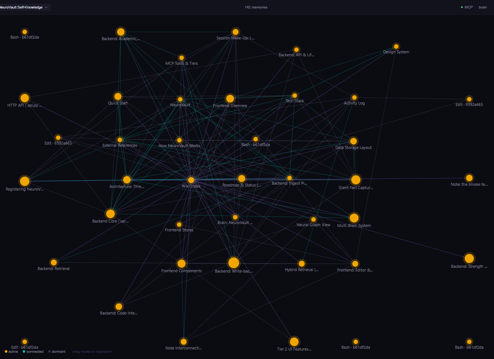

╭─╮ │ │ ╭┴─┴╮ │ ● │ ╰───╯
Never leaves your laptop
No cloud. No account. No telemetry. Just files.
Claude forgets you after every conversation. NeuroVault doesn't.
A local-first memory layer for AI agents. Notes, decisions, people, projects — captured once, recalled whenever any MCP-speaking agent asks. Analytics mode shows the structure of your brain at a glance: bigger nodes for what gets referenced most, soft tints for clusters of linked notes.
Every memory is a plain .md file on your disk. The database is
just an index. If the index ever breaks, we rebuild it from the files.
You own your brain.
╭─╮ │ │ ╭┴─┴╮ │ ● │ ╰───╯
No cloud. No account. No telemetry. Just files.
●───● │╲ ╱│ │ ● │ │╱ ╲│ ●───●
Every note is a node. Force-directed graph, typed links, live.
╭───╮ │ ● │ ╰─┬─╯ ╲ ╲
Semantic + keyword + graph search, fused. Weighted by recency.
╭─╮ │█│ │█│ │█│ ▼
Live preview, [[wikilinks]], slash commands, 7 themes.
┌─────┐ │ + │ │ - │ │ + ✓ │ └─────┘
Claude synthesizes wiki pages from raw notes. Every change is a diff.
╭─╮╭─╮╭─╮ │W││R││P│ ╰─╯╰─╯╰─╯ ● ○ ○
Work, research, personal — one keystroke. Obsidian-compatible.
╭────╮ │┌──┐│ │└──┘│ │████│ ╰────╯
One JSON in your agent config. Persistent memory, every chat.
╲ │ ╱ ╲│╱ ──✦── ╱│╲ ╱ │ ╲
Recall walks the graph — finds what you meant, not just what you typed.
● ╱│╲ ● │ ● ╲│╱ ●─●─●
Analytics mode: bigger nodes for what gets referenced most (PageRank), soft tints for clusters of linked notes (Louvain). Tip bar explains each node's role on hover.
┌──┐ │⌘ │ │/ │ └──┘ ✦
No API keys. The /name-clusters skill runs in your
existing Claude / Cursor session via MCP. Same pattern coming for
deduplication, folder filing, and frontmatter lint.

[[wikilinks]]
bolder than weak semantic matches). Flip on Analytics mode and
nodes resize by importance, soft background tints group communities,
and a tip bar explains each node's role.

⌘K is the primary nav verb. Three sections in one
palette — Commands (fuzzy), Notes (title search),
Memory (semantic recall after three characters).
Auto-saved as markdown. A file watcher triggers the ingestion pipeline — chunk, embed locally, extract entities, update the knowledge graph.
A UserPromptSubmit hook silently runs your message through an extractor.
Eight patterns catch preferences, decisions, deadlines, stacks.
Each fact becomes a first-class kind='insight' engram
with a wikilink back to where you said it.
Claude calls recall() via MCP. Hybrid search fuses
semantic, keyword, and graph hits. Cross-encoder reranks the top
candidates; PageRank importance lifts hub notes when Analytics mode
is on. Answers now carry context they couldn't have had before.
127.0.0.1:8765. It refuses connections from other machines.